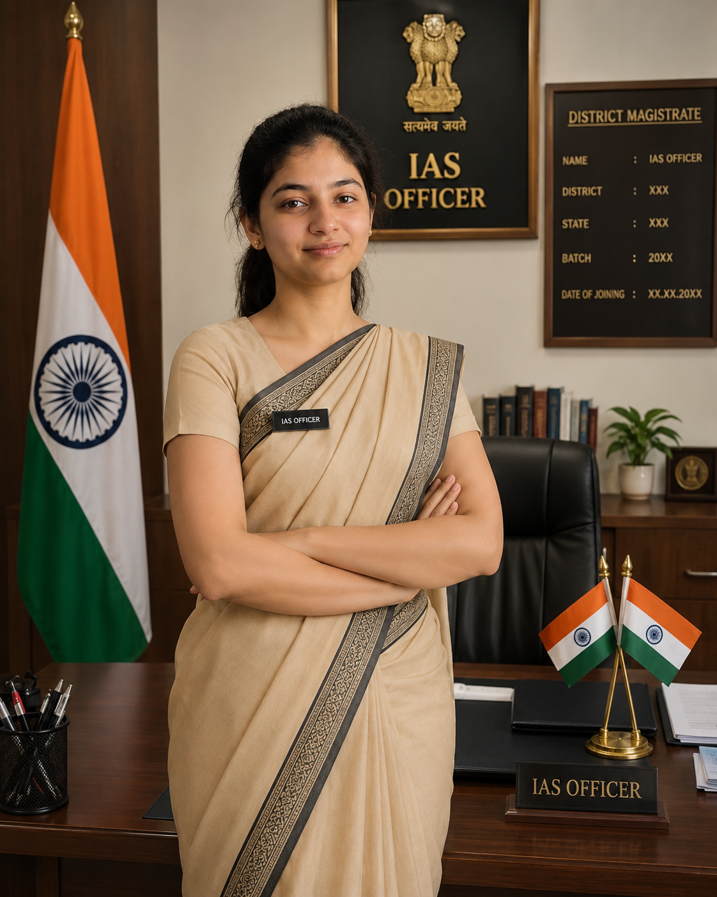
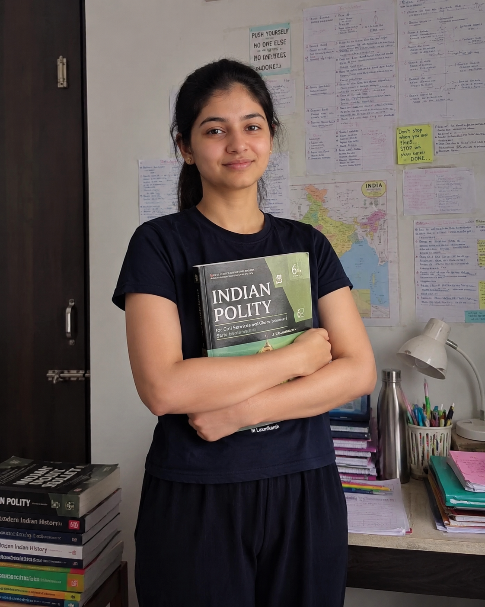

Chief Mentor
Chief MentorSmt. Bala Latha M.
Founder · Ethics & GovernanceTwo-time civil servant, 12 years in the Ministry of Defence.
Founded by Smt. Bala Latha Mallavarapu — twice selected for the Civil Services. 16+ years of mentoring aspirants for UPSC, APPSC and TGPSC across Hyderabad, Vijayawada and Tirupati.
1,00,000+ students mentored · 100+ civil services selections

Real ranks, real faces — selections built on disciplined mentorship.
A distinguished former bureaucrat and renowned educator with 12 years in national administration. Twice selected for the Indian Civil Services, she now mentors the next generation of public servants.
“If you can dream it, you can do it. If I can do it, anyone can do it.”


Answer three quick questions and we'll recommend the programme that fits you best.
Teaching is only half of it. The other half is the system around you — and that's what we've spent 16+ years building.
Smart presentations and interactive teaching for clearer concepts.
Plan your preparation, track progress and stay focused.
Daily and monthly materials prepared by experts.
Structured classes, regular tests and answer-writing practice.
Assessments, feedback sessions and progress tracking.
Multiple batches and small-batch focus for every student.
Civil servants, subject experts and mentors who understand the exam from the inside.
Chief MentorTwo-time civil servant, 12 years in the Ministry of Defence.
 Mentor
Mentor18 years of teaching Polity for UPSC and state services.
 Faculty
Faculty14 years · author of CSB's Modern History notes.
 Faculty
Faculty12 years · AP & Indian geography specialist.
Speeches and stories from the Toppers' Meet — how they planned, failed, recovered and cleared.
Watch all speechesAP & TS current affairs, UPSC subject books and monthly magazines. Secure payment, delivered to your door.
A multi-stage process that tests knowledge, analysis and personality. Tap a stage to explore it.
The first gateway — current affairs, general studies and aptitude.
The real test of knowledge, analysis and answer writing.
The final step — communication, leadership and suitability for public service.


⇆ BEFOREAFTERStep inside our classrooms and branches in Hyderabad, Vijayawada and Tirupati.
“Madam's guidance and the mentor reviews kept me honest. The Mains test series was the closest thing to the real exam.”

“The academy treated my daughter like family. Hostel and library support were excellent.”

“The AP Current Affairs book and Groups app made my APPSC preparation so much easier.”

“Daily current-affairs handouts saved me hours every month. Crisp, exam-focused and always on time.”

Can't find what you're looking for? Press Ctrl K to search, or chat with a counsellor on WhatsApp.
Hyderabad (Ashok Nagar, main branch), Vijayawada (Andhra Loyola College) and Tirupati (Air Bypass Road).
Yes — through CSB Groups Academy, for Group 1 and Group 2, in English and Telugu.
Yes. Add books to your cart and pay securely by UPI, card, net banking or wallet. We deliver across India.
Every student gets dedicated mentor support, with progress reviews and strategy sessions.
“Balalatha's CSB IAS Academy” for Civils and “CSB Groups” for APPSC/TGPSC on Android. On iOS use MyInstitute with org code VRDLC (Civils) or OTGNJ (Groups).
Current affairs, Civils, APPSC & TGPSC study materials and updates — on your phone.